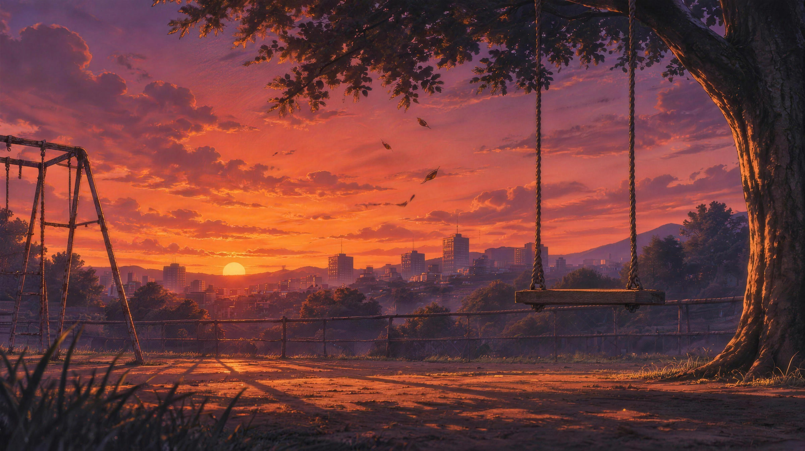
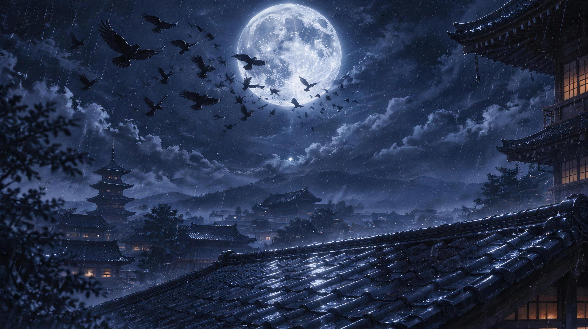
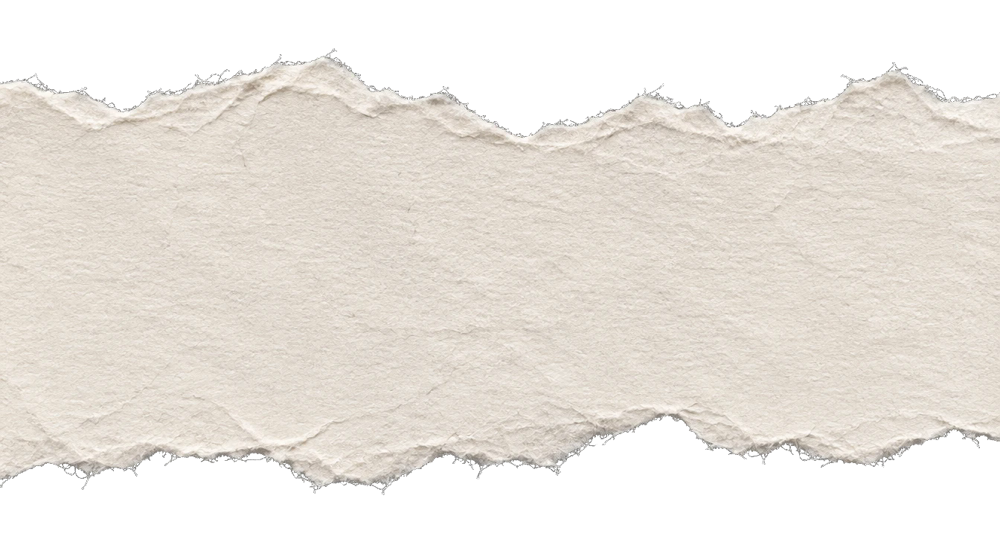
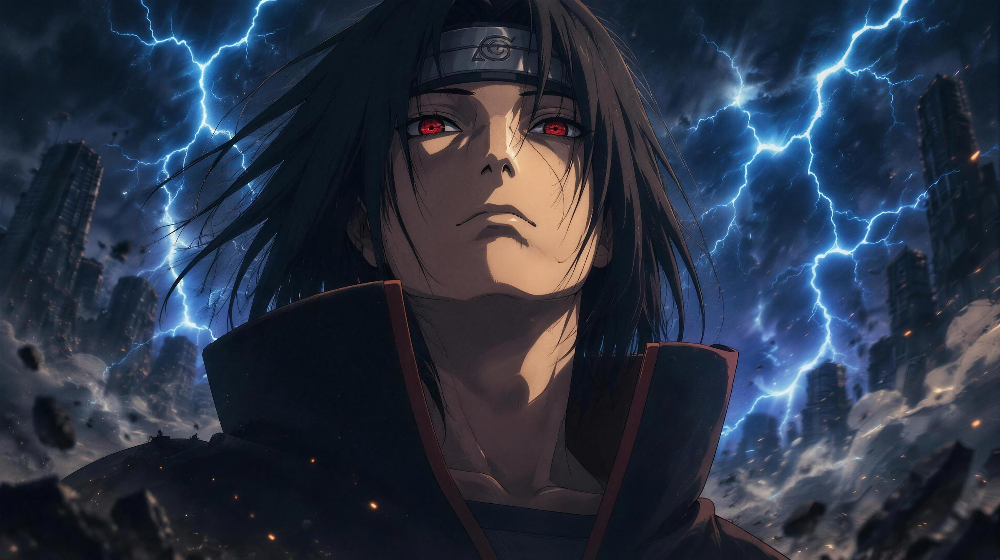
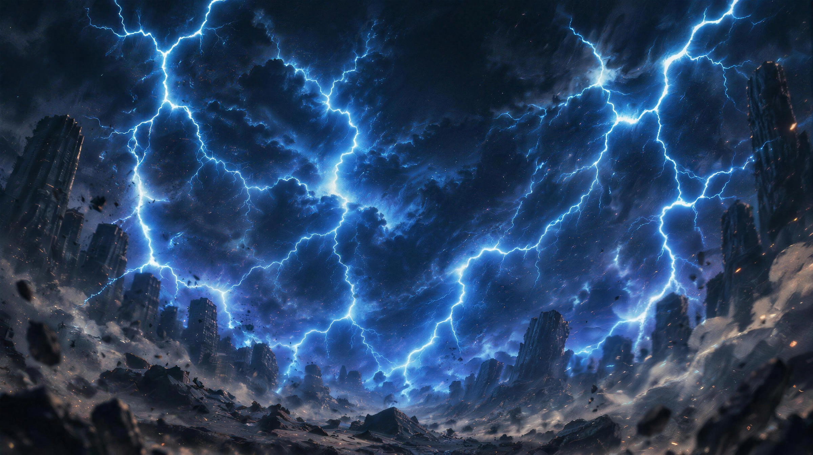
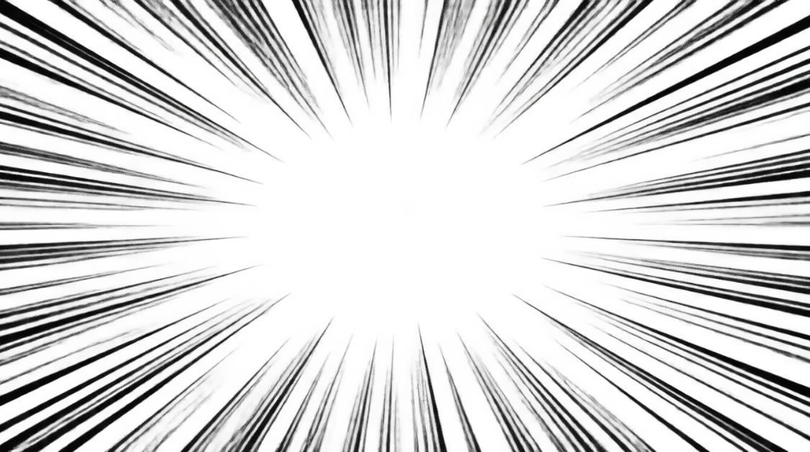

SEARCHING
FOR A GAME
探索中


SEARCHING FOR A GAME
探索中


still searching…

Queue-Jutsu wird gewirkt …
Nicht mal Kakashi kommt so spät.
Sasuke hat Itachi schneller gefunden.
Matchmaking im Tsukuyomi: gefühlt 72 Stunden.
Gleich geht's los. Bleib da.
FUZZN
SEARCHING FOR A GAME
探索中